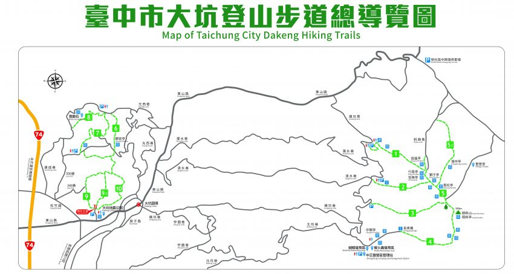

大坑風景區內目前總共規劃有十二條登山步道，有分難易程度。附近有因921地震而形成的溫泉，還有原來的軍功國小、東山國中因921地震改建為大坑地震紀念公園，保留車籠埔斷層帶遺跡與留頹傾的校舍供教育使用，公園下方與9號步道相銜接，因停車方便、難度適中，是目前最多人假日休憩之去處。登山步道全長加起來總共有約16公里長。也就是最近網路上很紅很夯的大坑步道。從散步健行級的休閒型步道到需要準備體力跟裝備的挑戰級步道，多種難易程度提供大家能夠依照各自評估體力腳力規劃行程。不管是假日出遊想散步踏青或是想提高難度鍛鍊一下身體，都可以來大坑選擇安排最符合自己需求以及體能狀況的路線。